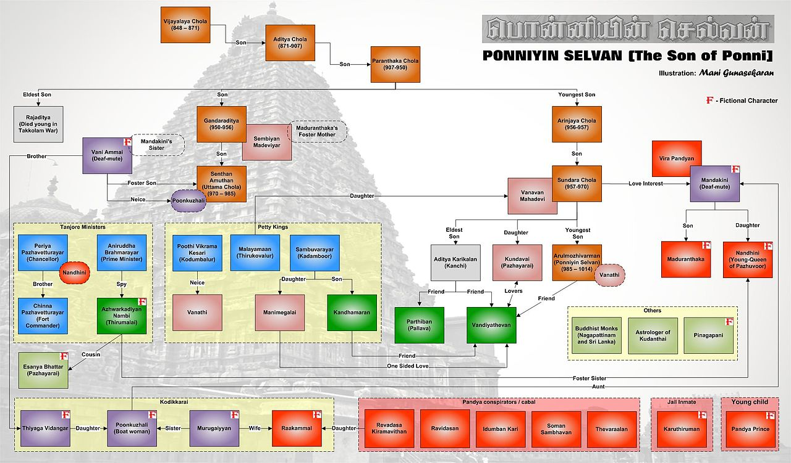

Source: Wikipedia
Ponniyin Selvan: I(The Son of Ponni) is a 2022 Indian Tamil-language epic historical action adventure film directed by Mani Ratnam, who co-wrote it with Elango Kumaravel and B. Jeyamohan. Produced by Ratnam and Subaskaran Allirajah under Madras Talkies and Lyca Productions, it is the first of two cinematic parts based on Kalki Krishnamurthy's 1955 novel, Ponniyin Selvan. The film stars an ensemble cast including Vikram, Aishwarya Rai Bachchan, Jayam Ravi, Karthi, Trisha, Jayaram, Aishwarya Lekshmi, Sobhita Dhulipala, Prabhu, R. Sarathkumar, Vikram Prabhu, Prakash Raj, Rahman, R. Parthiban and Lal.[4] The music was composed by A. R. Rahman, with cinematography by Ravi Varman, editing by A. Sreekar Prasad, and production design by Thota Tharani. Ponniyin Selvan: I dramatizes the early life of Chola prince Arulmozhi Varman, who would become the renowned emperor Rajaraja I (947–1014).[5]
Ever since its publication, a film adaptation of Ponniyin Selvan had been explored by several Tamil filmmakers, including an attempt by M. G. Ramachandran in the late 1950s; however, it never materialized due to financial constraints. Decades later, Ratnam attempted to adapt the novel in the late-1980s and early-2010s but was unsuccessful. Calling it his "dream project", Ratnam revived the effort in January 2019, after Lyca agreed to fund the film. Following several changes in cast and crew, production of Ponniyin Selvan began in December 2019 and concluded in September 2021, halting twice due to the COVID-19 pandemic. The film was shot in various locations across India, with a few sequences in Thailand. It was originally intended to be a single film but was split into two parts.
Ponniyin Selvan: I was released in theatres worldwide on 30 September 2022 in standard and IMAX formats, where it received acclaim from film critics, who praised the direction, cast performances, musical score, visuals and faithfulness to the novel. Breaking several box-office records, the film grossed more than ₹500 crore (US$63 million) and became the highest-grossing Tamil film of 2022, the fourth-highest-grossing Tamil film of all time and the 15th highest-grossing Indian film of all time. It received six nominations at the 16th Asian Film Awards, including Best Film.
During 10th century in Thanjavur, the Chola dynasty rules prosperously in South India, under the reign of Emperor Sundara Chozhar, whose sons Aditha Karikalan and Arulmozhi Varman aka Ponniyin Selvan are heading their conquests of Kanchi and Lanka, respectively for the empire. Sensing something is amiss with the courtiers, Aditha Karikalan sends his friend, the Vaanar Clan's prince, Vallavaraiyan Vandiyadevan to investigate and relay the news to his sister Princess Kundavai and Sundara Chozhar subsequently. Vandiyadevan reaches the fortress of Kadamboor and overhears the conspiracy devised by the treasurer and minister of finance, Periya Pazhuvettaraiyar and other ministers to stop Aditha Karikalan from ascending the throne and install his uncle Madurantaka Chola on it.
Vandiyadevan had frequent meetings with a Vaishnavite Azhwarkadiyan Nambi, whom he spots at the fortress spying on the meeting. After escaping from the fortress, Vandiyadevan confronts Nambi on a boat, who reveals that he was in the fortress to meet his foster sister Nandini, who mysteriously disappeared from the house during his absence and later married Periya Pazhuvettaraiyar, who is much older than her. After learning this, Vandiyedavan meets Pazhuvettaraiyar's wife Nandini, who tells him to meet her at her building and gives her ring to him for entry into the royal palace when he expresses that he wants to deliver Nambi's message to her. Vandiyedavan meets the fort's chief-in-charge Chinna Pazhuvettaraiyar and reveals to Sundara Chozhar about the conspirators, but Chinna Pazhuvettaraiyar, who is Pazhuvettaraiyar's younger brother intervenes and tries to capture Vandiyedavan, who manages to escape from them and meets Aditha Karikalan's sister Kundavai through Nandini, who orders him to bring her reply first to her before reaching Aditha Karikalan.
After learning about the conspiracy, Kundavai (on whom Vandiyadevan begins to develop feelings) tells him to bring Ponniyin Selvan from Lanka. After winning the battle in Kanchi, Aditha Karikalan is told to return to Thanjavur but refuses as Nandini is present in Thanjavur. It is revealed that Aditha Karikalan was in love with Nandini, but the royalty refused to accept a poor orphan as the prospective queen of the Chola empire and banished her from the city. After years, Aditha Karikalan met Nandini tending to his enemy Veerapandiyan, who was the king of Pandya dynasty with whom she fell in love after being banished. In a fit of rage, Aditha Karikalan beheaded Veerapandiyan causing a depressed Nandini to swear vengeance against his family. Presently, Aditha Karikalan knows that Nandini married Periya Pazhuvettaraiyar just to avenge her past.
After winning the war against Raja Mahinda in Lanka, Ponniyin Selvan meets Vandiyadevan, who relays messages for him from Kundavai and Vanathi (Ponniyin Selvan's love interest and Princess of Kodumbalur) by reaching Lanka with the help of a rowing woman Poonguzhali. Nambi also arrives in Lanka and is revealed to be a spy of the Prime minister Aniruddha Brahmarayar. After a face-off with Nandini in Thanjavur, Kundavai then meets Sundara Chozhar and tells him about Periya Pazhuvettaraiyar's conspiracies. The next day, Pazhuvettaraiyar and the ministers manipulate Sundara Chozhar to order a convoy to bring Ponniyin Selvan back to Thanjavur. Meanwhile, Kundavai is asked by Sundara Chozhar to bring Aditha Karikalan to Thanjavur, as it would not be appropriate for the crown prince to be far away from the capital.
In Lanka, Ponniyin Selvan and Vandiyadevan are attacked by Pandya Aabathudavigal (a group of devout soldiers in the Pandya dynasty), which is headed by Ravi Dasan, but are rescued by a veiled woman Oomai Rani (who had saved Ponniyin Selvan from drowning in the Ponni river at a young age, thus giving the name). Kundavai meets Aditha Karikalan and tells him to arrive back at the kingdom by arguing that her decision to have Nandini banished was right as she took that decision as a princess, but Aditha Karikalan still adamantly refuses. Meanwhile, Pandya Aabuthudavigal's member meets Mahinda and receives soldiers as help from him in the group's plan to assassinate Ponniyin Selvan. Poonguzhali, realizing that the convoy is sent to apprehend Ponniyin Selvan for political reasons reveals about it to Ponniyin Selvan, Vandiyadevan, Nambi, and others. Ponniyin Selvan makes Vandiyadevan disguise himself as Ponniyin Selvan, and leaves with Poonguzhali to meet the convoy when his well-wishers prevent him from doing so, fearing threat for his life from Pazhuvettaraiyar.
On the way toward shore, Ponniyin Selvan and Poonguzhali discover that the convoy has been ambushed by Pandya Aabuthudavigal, who apprehends Vandiyadevan, misinterpreting him to be Ponniyin Selvan. Ponniyin Selvan heads towards Pandya Aabuthudavigal's ship to rescue Vandiyadevan and they drown in the sea due to a storm and are consequently, presumed to be dead. The news of Ponniyin Selvan's death reaches Sundara Chozhar, Kundavai, and Aditha Karikalan who are all devastated. Aditha Karikalan swears vengeance against Nandini for his brother's death and heads towards the kingdom to destroy her. Meanwhile, Oomai Rani, revealed to be a lookalike of Nandini, is shown swimming in the sea to find Ponniyin Selvan, to rescue him.
In 1958, M. G. Ramachandran announced Ponniyin Selvan, a film adaptation of Kalki Krishnamurthy's historical novel of the same name. Ramachandran bought the film rights to the novel for ₹10,000 (equivalent to ₹810,000 or US$10,000 in 2020), and would produce, direct and star in the adaptation, which would feature an ensemble cast including Vyjayanthimala, Gemini Ganesan, Padmini, Savitri, B. Saroja Devi, M. N. Rajam, T. S. Balaiah, M. N. Nambiar, O. A. K. Thevar and V. Nagayya. Before shooting could begin, Ramachandran met with an accident, and the wound took six months to heal; Ramachandran was unable to continue with the film even after renewing the rights four years later.[9][10]
In the late 1980s, actor Kamal Haasan and Mani Ratnam worked together on adopting the novel into a film. Composer Ilaiyaraaja and cinematographer P. C. Sreeram became attached to the project, while actors including Sathyaraj and Prabhu were cast in pivotal roles.[11][12] Ratnam revealed that he worked on a first draft of the film alongside Kamal Haasan, who had bought the rights of the novel from Ramachandran, but the pair shelved their plan as the project did not make financial sense at the time.[13][10] In an interview with Filmfare in January 1994, Ratnam stated that it remained one of his "dream projects" and that he had hoped to work on during his career.[13] Kamal Haasan then attempted to make the story into a forty-part television series, and worked with writer Ra. Ki. Rangarajan on the screenplay, but the project was later stalled.[14]
In late 2010, Ratnam renewed his interest in the project and worked alongside writer Jeyamohan to finalise the script for the film adaptation of Ponniyin Selvan. Expected to be made in the Tamil at a cost of ₹100 crores, Ratnam planned to produce the film himself initially, with the intention of teaming up with a bigger production house later on in the film-making process.[15] Technicians including composer A. R. Rahman, cinematographer Santosh Sivan, editor A. Sreekar Prasad and art director Sabu Cyril were soon after attached to the project.
Ratnam cast Vijay in the leading role of Vallavaraiyan Vandiyadevan. After signing the film, Vijay called it a "privilege" and a "dream come true" to be working with Ratnam for the second time after Nerrukku Ner (1997).[16] Mahesh Babu was cast as Arulmozhi Varman, who later becomes the Chola emperor Rajaraja I in the project, and also expressed his delight at being selected by Ratnam.[17] Arya also joined the project to play a third leading male role after the script was narrated to him.[18] Meanwhile, Sathyaraj was signed to play a supporting role in the film.[19] During the course of the casting process, Ratnam had also considered other actors including Vikram, Suriya and Vishal but they eventually did not make the final cast.[20] For the leading female roles, after considering Jyothika,[21][22] the team finalised Anushka Shetty for a role and held discussions with Priyanka Chopra in regard to other characters.[23][24]
Seven days before the scheduled start of the shoot, a photoshoot for the film was held in Chennai featuring Vijay and Mahesh Babu.[25] For the shoot, the team sought permission from the officials of Mysore Palace and Lalitha Mahal to film sequences. However, their requests were denied with palace officials keen to keep film crews away from the historic locations.[26] The film was later shelved before the start of the filming stage, as the expected cost of production escalated. Jeyamohan stated that the film did not materialise as the team struggled to find available locations to shoot the film. He revealed that temple officials in Tamil Nadu refused to allow the team to film scenes on the premises and that the expensive cost of producing replica sets meant that it would not be a viable solution.[27]
In January 2019, Ratnam decided to revive Ponniyin Selvan after Lyca Productions, who earlier collaborated with him in Chekka Chivantha Vaanam (2018), agreed to fund the film.[28] While Vikram,[29] Vijay Sethupathi and Jayam Ravi decided to play the lead roles, along with Silambarasan in a crucial role,[30] Amitabh Bachchan and Aishwarya Rai Bachchan too assigned the project; the former playing the role of Sundara Chola in the film.[31] Composer A. R. Rahman, screenwriter Jeyamohan and editor Sreekar Prasad, were retained in the new version. In April 2019, a major change in the film's cast took place, with Sethupathi opting out of the project due to schedule conflicts,[32] thus being replaced by Karthi,[33] and Anushka Shetty was included in the film's cast,[34] working with Ratnam for the first time. Aishwarya Rai, later herself confirmed her inclusion in the project, at the Cannes Film Festival.[35][36][37] Anushka Shetty, who has been part of the film's old version, officially signed the project.[38][39] Actress Amala Paul, too confirmed being a part of the film.[40][41][42] Vikram, who is one of the principal characters in the film, too confirmed his part.[43][44][45] Veteran actors R. Parthiban and Jayaram were also reported to join the film's cast.[46][47][48] Rajinikanth wanted to portray Periya Pazhuvettaraiyar in a cameo, but Ratnam refused since it would upset the actor's fans; the role went to Sarathkumar.[49]
In June 2019, Elango Kumaravel announced that he will co-write the screenplay for this version with Ratnam and Jeyamohan.[50] Ratnam decided to retain cinematographer Santhosh Sivan for this project. However, his unavailability made the director to sign on Ravi Varman. Varman, was working for Indian 2, directed by S. Shankar, before signing the film's project. But the latter's delay made Varman to quit the film, making him available for Ponniyin Selvan.[51] In September 2019, Ratnam confirmed that he will be working with the composer and lyricist duo Rahman and Vairamuthu, who were a part of Ratnam's frequent collaborations since Roja (1992). However, it received huge displeasure from netizens, as the latter was accused of sexual misconduct and harassment by several women singers and artists from the Tamil film industry.[52][53] This also resulted in Anushka Shetty opting out of the project.[54][55] Art director Thota Tharani signed the new version of the project, thus replacing Sabu Cyril, who worked in the old version.[56][57] Costume designer Eka Lakhani travelled to Thanjavur temples to study sculptures, meet weavers, and understand the heritage before starting the process of designing.[58][59]
Ratnam announced that the film's shoot will take place across Tamil Nadu and Thailand,[60][61] and as per his advice, several actors from the film including Vikram, Jayam Ravi, Karthi grew their hair long for their roles in the film.[62][63][64] In October 2019, Ashwin Kakumanu announced his inclusion in the project.[65][66] Actor Lal, shared a picture of him along with Ratnam, raising expectations about the film.[67][68] He further confirmed his inclusion, stating that he will play the role of an aged warrior in the film.[69][70] Prior to the film's shoot,[71] Ratnam went on a location recce across Thailand,[72] and a few reports stated on choosing Thailand as the primary spot, since its rich forests and the temples there resemble the 10th-century feel in which the story is set.[72] Another major change in the film's cast happened, with Amala Paul and Keerthy Suresh opting out of the film. While the former, stated call sheet issues as the reason,[73] the latter cited the she was roped in for Annaatthe.[74] However, a few addition in the film's cast took place, with Trisha,[75] Aishwarya Lekshmi and Vikram Prabhu were reportedly signed in the film.
Chart of characters involved in Ponniyin Selvan.
The story thread of Ponniyin Selvan spans years and more than 50 characters,[76] with 15 principal roles.[77] The older version of Ratnam's film adaptation had Vijay playing Vallavaraiyan Vandiyadevan one of the two protagonists[16] and Mahesh Babu playing the other protagonist role of Arulmozhivarman alias Rajaraja I alias Ponniyin Selvan, after whom the novel is named.[17][78] After the project was revived, the roles went to Karthi and Jayam Ravi respectively. It was later reported that Aishwarya Rai Bachchan will play dual roles in the film, as Nandini, the main antagonist of the novel, and her mute mother, queen Mandakini Devi.[79] For his role as Azhwarkadiyan Nambi, Jayaram was sported a bald look in the film.[80] Trisha would essay the role of Kundavai alias Illaiya Piratti.[81] For the role of Poonguzhali, Aishwarya Lekshmi learnt rowing, as the character Poonguzhali is a boat woman in the novel.[82] Post shooting being suspended due to lockdown, Trisha trained in horseriding at the Madras School of Equitation,[83] where she was enrolled for a special course on 26 October 2020, and completed within 14 November 2020.[84] Both Jayam Ravi and Karthi, confirmed their characters playing in the film.[85]
Ponniyin Selvan was originally planned as a single film with a budget of ₹500 crore.[86][87] Later, it was split into two parts that were to be shot back-to-back,[88] with some sources reporting that budget of ₹500 crore is spread across two parts.[89][90]
Principal photography began on 11 December 2019 at Krabi, Kanchanaburi and other places in Thailand, where the crew planned its shooting schedule for 40 days.[91][92] After completing the first schedule in January 2020, the team planned to shoot the second schedule in Chennai,[93] but later moved to Puducherry. The second schedule of shooting took place on 3 February 2020 in Puducherry, and completed within six days.[94][95] Then the team moved to Hyderabad for the next schedule, on 10 February,[96] where the entire team planned to shoot at Ramoji Film City. The second schedule was wrapped up on 26 February 2020.[97] It was reported that, Karthi faced an accident while he was shooting in Hyderabad, where he was thrown up in the air, while riding a horse, however he faced only minor injuries.[98] As of March 2020, the makers shot the major portion of the film for 90 days before shooting being interrupted due to the COVID-19 pandemic.[99] In January 2020, it was reported that the film would be split into two parts,[100] which was confirmed by Mani Ratnam in April 2020.[101][102]
In September 2020, Ratnam eventually planned to resume the shooting at Sri Lanka,[103] but due to restrictions on international travel,[104] it was difficult for the team to get permission from the officials to resume filming,[105] and therefore decided to shoot major portions of the film in India.[106] Ratnam wanted to shoot major portions in Hyderabad, Jaisalmer, Jaipur, Madhya Pradesh and many prominent locations across India.[106] Although the team eventually planned for filming in mid-November,[107] he decided against doing so,[108] lamenting that despite government allowing permission for film shootings, it was advised that the film's shooting must have minimal crew members, with not more than 75 people working on the film. Mani Ratnam stated that since 500 people will be featured in the film's shoot, it is difficult for shooting in mid-2020.[109] On 10 December 2020, a minor schedule of the film took place in Pollachi, featuring the lead actors.[110] The team stated that the major schedule of the film will take place in January 2021, and was touted to be the biggest schedule, which will be wrapped up in a single stretch.[110] Vikram was reported to be present in the schedule, after completing the shoot for Cobra.[111] After a nine-month long hiatus,[112] the shooting for the film resumed on 6 January 2021 at Ramoji Film City, Hyderabad.[113] The major schedule featured the attendance of Sarathkumar,[114] Aishwarya Rai Bachchan,[115] Trisha,[116] Rahman,[117] Prakash Raj,[118] Parthiban and Mohan Raman.[119]
On 3 February 2021, the makers shot for a special number featuring Trisha and 250 other artists at a huge set constructed at Ramoji Film City.[120] The art direction team, supervised by Thotta Tharani, had constructed five huge sets in the shooting location.[120] According to the executive producer Siva Ananth, the lead cast members began shooting for the portions in Hyderabad, excluding Vikram, who earlier shot for the portions in January, and was reported to join the sets in between a brief break during the schedule.[121] After filming for a schedule ended in March, the next schedule was to start in May; by 23 April, it was delayed to June due to a spike in COVID-19 cases. Plans to shoot in North Indian states during that time was changed to instead shoot in Chennai and Hyderabad.[122] In mid-June 2021, it was announced that shooting would only resume once there were fewer COVID-19 cases.[123]
Filming resumed in July 2021 at Puducherry.[124] In August, the team went to Madhya Pradesh for location scouting, so that they can shoot the pending portions, and later resumed the shoot in Orchha and Gwalior.[125] Within late-August 2021, Jayam Ravi and Vikram had completed his portions for both the parts in the film.[126] The team later moved to Maheshwar for another schedule which majorly focuses on Karthi and Trisha.[127] On 4 September 2021, Rahman confirmed that he completed his portions.[128] The team had begun shooting in Pollachi for a song sequence, in the middle of the month.[129] The team moved to Pollachi and then to Mysore to shoot some sequences. It was reported that Karthi joined shooting in Pollachi and Ashwin Kakamanu joined shooting in Mysore. Karthi finished shooting for his portions on 16 September 2021.[130] On 18 September, Mani Ratnam confirmed that the entire shooting of the first part has been wrapped, except for few sequences in the second part.[131] However, in March 2022 Jayam Ravi, Karthi and Aishwarya Rai Bacchhan wrapped up a small patchwork left which was fully completed in 7 days.[citation needed]
The dubbing for the film started on 27 September 2021.[132] Vikram has dubbed for himself for five languages for the film, in Tamil, Hindi, Telugu, Malayalam and Kannada, but only in the trailer. Both Jayam Ravi and Karthi dubbed for the Tamil and the Telugu versions of the film.[133][134]
In September 2021, the Animal Welfare Board of India (AWBI) filed a lawsuit against Mani Ratnam in connection with the death of a horse allegedly during the film's shooting in Hyderabad in August 2021.[135] An official from the People for the Ethical Treatment of Animals (PETA) India, complained to the local officials against Ratnam, his production house Madras Talkies and the owner of the horse under the Prevention of Cruelty to Animals (PCA) Act and Indian Penal Code (IPC), saying that several horses were continuously used for hours at the film set due to which the animals were tired and dehydrated.[136] Khushboo Gupta, the Indian Chief Advocatory Officer from PETA raised objections against Mani Ratnam saying that "In the age of computer-generated imagery (CGI), production companies have no excuse for forcing exhausted horses to play at war until one of them drops dead" and felt that "Compassionate, forward-thinking filmmakers would never dream of hauling sensitive animals to a chaotic movie set and forcing them to 'act'".[137]